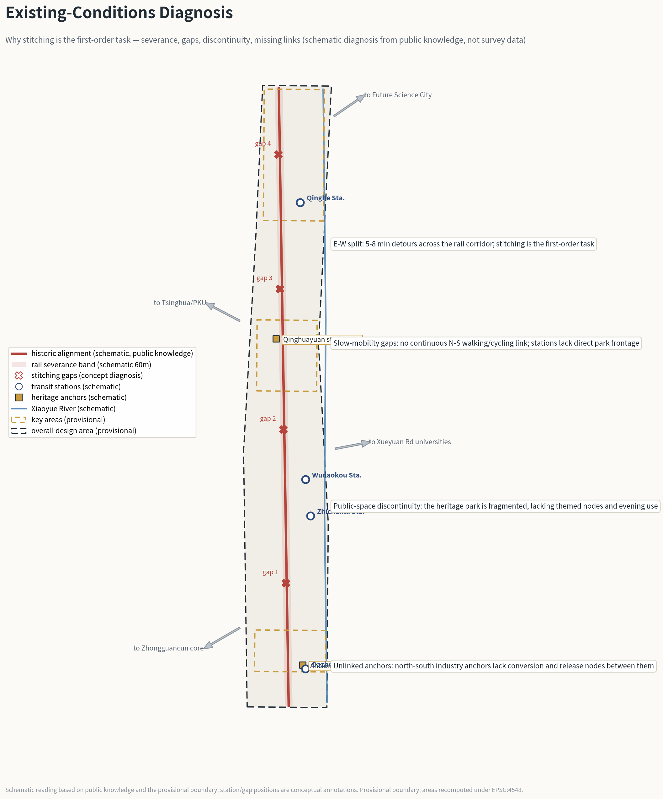
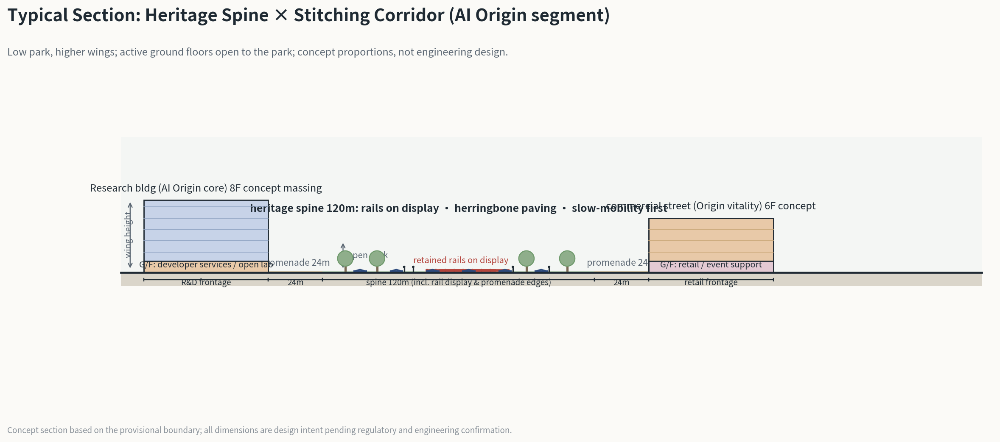

Centennial Jingzhang AI Innovation Belt open call · AI-agent concept proposal (provisional intake)
THE SWITCHBACK LINE · THE SWITCHBACK LINE
Jingzhang's Second Ascent — Zhan Tianyou's herringbone switchback as urban grammar: one spine (heritage green spine), three folds (Dazhongsi / AI Origin / Zhongzhiyuan switchback stations), six corridors (E-W stitching), two wings (tech service / scenario empowerment). All spatial content is concept suggestion.
Boundaries and key areas are provisional rough polygons (geometry_role=provisional_constraint, official_boundary=false) for concept display, visualization, and self-check only; never official redline, approval basis, or precise-area basis. Full recalculation follows official data release.
Overview Map
A ~9.7 km north-south corridor: brick dashed line = historic Jingzhang alignment (schematic), blue dotted lines = herringbone stitching corridors, gold frames = three key areas (provisional polygons).
05 Commercial0701 Residential0802 Research0803 Cultural0804 Education1401 Park green16 Reserveheritage park / waterfront greenwayconcept building footprintsHistoric Jingzhang alignment (schematic)herringbone stitching corridorsheritage greenway spineXiaoyue River (schematic)key areas (provisional polygon)public nodes
Reading the map
1 Dazhongsi · Departure Hall: AI-native business and arrival sequence; 2 AI Origin · Release Station: the world-class AI ecosystem as a community; 3 Zhongzhiyuan · Climbing Segment: full-stack sovereign AI and strategic reserve. Six stitching corridors re-weave the east-west districts at 5-8 minute walking spacing.
Existing-Conditions Diagnosis and Typical Section
Existing-conditions diagnosis (schematic, from public knowledge) and the spine × stitching-corridor section (concept proportions): design judgments start from site evidence.


three scope levels
Research area 43.6 km2 → overall design area 11.4 km2 → key areas 368.4 ha: from industry narrative down to spatial schemes.
Coordinated research area (textual extents)
43.6 km²
industry strategy and synergy research
Overall design area (provisional recalculation)
11.41 km²
consistent with announced ~11.4 km2
Key detailed-design area (announced)
368.4 ha
three key areas combined
Key Areas
Three switchbacks: depart → release → accelerate. Provisional-polygon recalculations vs announced values below.
1 Dazhongsi · Departure Hall
72.0 ha
announced 72.0 ha; AI-native retail × culture
2 AI Origin · Release Station
104.3 ha
announced 104.3 ha; first releases × open source
3 Zhongzhiyuan · Climbing Segment
192.9 ha
announced 192.1 ha; full-stack R&D × strategic reserve
Land Use
19 parcels split from the submitted boundary with shared edges (zero gaps/overlaps), all in national land-use classification codes.
Code
Type
Area (ha, recomputed)
Lead function
0802
Research
159
Zhongzhiyuan full-stack R&D / AI Origin core / piloting
Compute & data sandbox (Zhongzhiyuan + Dazhongsi window)
reversible · auditable · exitable
Core Metrics
All areas and ratios recomputed from GeoJSON under EPSG:4548, strictly consistent with metrics.json.
Site area
11.41 km²
provisional recalculation
Green ratio
22.9%
spine + waterfront
Public-space ratio
5.5%
8 nodes + 2 promenades
Scenario nodes
12 cards
cards mapped to nodes and corridors
Task Coverage
All 17 mandatory announcement tasks (1.3/1.4/1.5) and all 6 agent tasks (agent.1-agent.6).
Task
Content
Covered
1.3.1-1.3.3
design goals: ecosystem / urban form / quality district
✓
1.4.1-1.4.3
three scope levels
✓
1.5.1.1-1.5.1.2
research-area tasks
✓
1.5.2.1-1.5.2.5
overall-design-area tasks
✓
1.5.3.1-1.5.3.3
detailed design of three key areas
✓
agent.1
overall concept: naming system & logo direction
✓
agent.2
full-stack innovation & ecosystem: 6 cases + map
✓
agent.3
scenario empowerment: 12 cards (3 validation) + 6 personas
✓
agent.4
public space & landmarks: 3 landmarks + honor wall + component library
✓
agent.5
cultural narrative: twin timelines & layered signage
✓
agent.6
events & long-term operation: four-season program + Switchback Hackathon + Switchback Club
✓
Public Value and Risk
Success is measured by the value AI returns to residents, public space, and governance; eight-dimension risk register in risk.json.
slow-mobility time saved
cross-corridor walk 5-8 min → 2-3 min (concept estimate)
public-service improvement
elder care / eco stewardship / switchback ticket
heritage legibility
heritage park becomes walkable, narrated, participatory
key risks
rent & merchant displacement / corporate capture of public space / privacy & bias / heritage consumption / equity — each with triggers, mitigation, suggested responsible body
Self-Check Status
PASS local self-check
Deterministic validation, spatial review, visual packaging, and professional evidence review all pass; zero land-use gaps/overlaps; metrics match spatial recomputation. Reproduce:python3 scripts/self_check_submission.py submissions/loml13/switchback-line --pr-author loml13
PROVISIONAL precision notice
Provisional boundary and key-area polygons are not official redlines or precise-area bases; regulatory indicators (FAR/height/density/setbacks) are unknown; full recalculation follows official data release.
Sources
· Pre-qualification announcement (Haidian Branch, Beijing Municipal Commission of Planning and Natural Resources, 2026-05-09, official_public)
· Agent-facing open-call taskbook excerpt (2026-05-18, user_provided_cleared)
· Repository site package brief/site-package/ (enums/ranges/standards/schemas)
· Public source registry data/source_registry.json and processed fact pack data/processed/
· Provisional boundary and key areas: brief/site-package/geometry/provisional_boundaries.geojson (provisional_only)
· Design layers and metrics: agent_generated_design / agent_inferred_from_public_data (flagged in GeoJSON properties)
Assumptions
A-CONTROLS-001：regulatory indicators, road redlines, ownership, municipal and engineering conditions pending official confirmation ·
A-BOUNDARY-001：all area metrics under the provisional boundary will be recomputed on official redline release ·
A-FLOORS-001：assumed floors are design intent only ·
A-ROAD-WIDTH-001：road areas estimated as centerline × assumed widths ·
A-SCENARIO-001：scenarios are application-based concept suggestions, not approved operations。